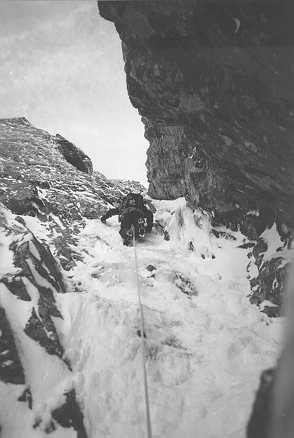

9 am and we were trudging up the long windy track up to the CIC hut. I had done the same walk in the previous day to do the Ledge Route but this time we didn't manage a hitch up the track in the back of a Forestry Commission landrover.
The previous night in the Clachaig we bad browsed the guidebook for a suitable route but today was Good Friday so that finally settled it. Good Friday climb was grade 3 and faced west, the right direction to have a low avalanche risk after the previous day's heavy snowfall.
Once again the day was overcast but there was now a sprinkling of fresh snow covering the path. Just below Douglas boulder we donned crampons and got an axe out and proceeded the slog up the snow in Observatory gully to the base of the route. Niall was tiring, unused to trudging up in crampons while Jon's leather boots were flexing rather alarmingly. Spin-drift was blowing down the gully so we headed for the shelter of a boulder to gear up. Just below this was an unconsolidated snow drift separating us from the firm snow and ice the other side. The group gearing up just above had skirted the drift lower down and found great amusement in watching us swim through!
Jon and I sorted our gear out first and started to move together to the start of the climb. This involved an easy, but exposed traverse across a snow ramp to the start of the main gully. I looped a sling around a rock spike half way across and continued to the stance to take our place in the queue. "Bomber sling placement" commented Jon, "not if you remove the snow at the bottom and discover its Just a downward pointing spike" I pointed out, but there hadn't been any other gear. We could now get a glimpse of what was to come while we waited for the pair in front to move on.
After a couple of straightforward snow pitches, and much waiting for the threesome ahead of the pair immediately in front of us, I came to the belay below the crux. While waiting a loud "below" was heard followed by the whistle as something shot past the belay. "That'll be one of my pegs" commented the second belaying beside me. Despite their liberal use by the group in front I found, with a bit of effort, some good nut placements for the belay. This was my first grade 3 lead and I had only seconded a couple of 3's before so I was a bit nervous as I watched the bloke in front traverse right and then up the steep ice pitch ahead.
I followed, careful with each axe placement and was glad that I had replaced my blunt strap on crampons with step-Ins. The ice was hard but the axes went in well and, on the whole, felt secure. At the end of the traverse I placed my first scrube and moved upwards. I moved up over the ice bulge ahead, deciding to save my other ice screw in case I needed it for the belay. The gradient eased as I climbed to reveal the next belay - occupied. The belay wasn't going to need an ice screw so I placed it at my dubious stance and waited.
Eventually the belay was vacated and I moved up. Fortunately it was secure, as it was only Jon's second proper ice climb and he didn't have the advantage of plastics and strap on crampons, After the odd call of tight rope he emerged at the belay and I headed on up. The 'll wasn't v'sible but surely it couldn't be that far, 't had already gone 4 O'clock. The next pitch was straight forward and as I started the following pitch I moved round some rock to reveal a big snow bank - was this the top comice? It was and I soon emerged to meet the keen wind blowing across the summit plateaux of Ben Nevis.
However, the highest trig point in the country was still 30 metres away so I had to content myself with a belay about a metre lower than the highest possible in the country. There was no chance of shouting any commands in the wind but fortunately Jon used his intelligence and the feel of the rope to realise that he was on belay. He made it up no problem and we moved to the summit shelter to remove gear. Paul and Niall had asked us to wait for them so we had plenty of time to sort ourselves out. We reached the summit at 5:30; it would be almost completely dark by 7pm so I wanted to have at least navigated off the summit, between the gullies and past the stumps of the removed marker poles by then.
We took anxious looks out of the shelter every ten minutes but by 6:30 there was still no sign of them. This was the deadline I had set before we should start down, but just then Paul appeared over the comice. We went to help them and as quickly as we could set off on the bearing. Visibility was about ten metres at worst but with only snow on the ground we used Jon as a marker to help get the bearing right. After pace counting we switched to the second bearing and eventually reached the tourist path. It was now pretty dark but the path was obvious, and mostly straightforward.
After a long and tedious walk down by head torch we made it back to the distillery just before 10 pm. It had been a good Friday, even if we had been benighted on our walk down. Both Paul Eakins and I were pleased to have done our first grade 3 winter lead without an epic and Jon and Niall, as novices, had mostly enjoyed seconding.

Stu in fine winter form on pitch 4 of Green Gully, Ben Nevis
Photo: Mathew brown